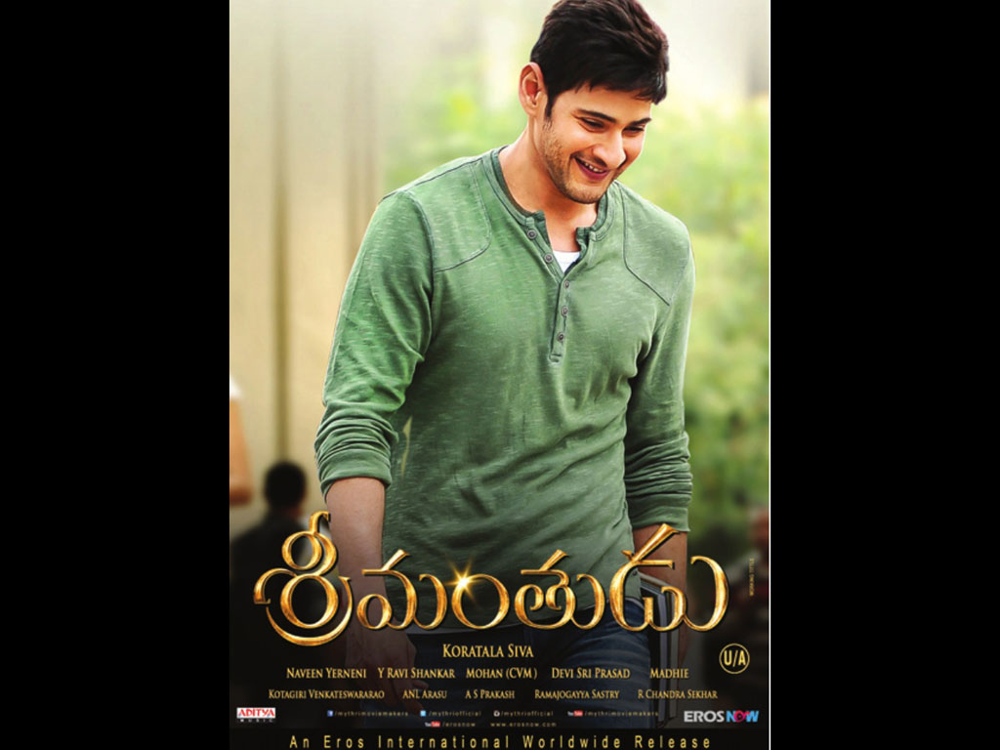

The following below are the Interesting facts about myself.
I love playing badminton.
I like to watch movies.
I love to play cricket.
The film tells the story of Harsha Vardhan (Mahesh Babu), a young man who inherits a business empire from his father Ravikanth (played by Jagapati Babu). Urged by his friend Charuseela (Haasan) to learn about his and his father's ancestral roots in a remote village named Devarakota, Harsha adopts the village and spends some time trying to improve the standard of living of the local people and the infrastructure of the village. His efforts anger the local crime boss Sashi (played by Sampath Raj) and his brother Venkata Ratnam, a politician (played by Mukesh Rishi).
